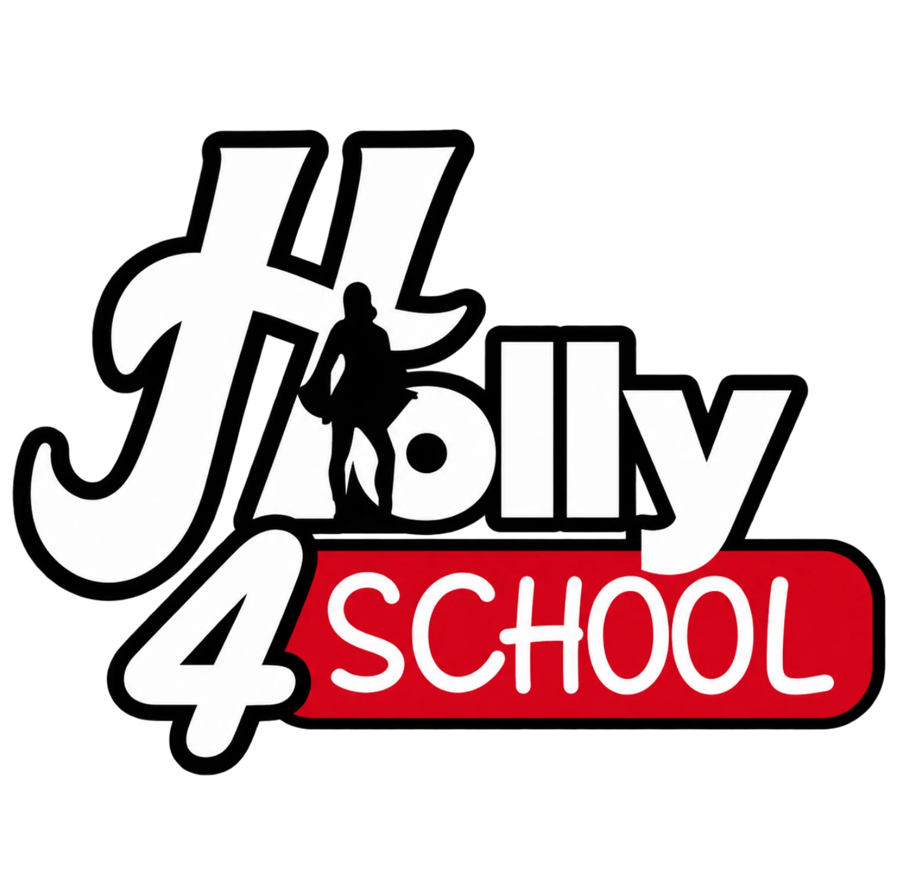
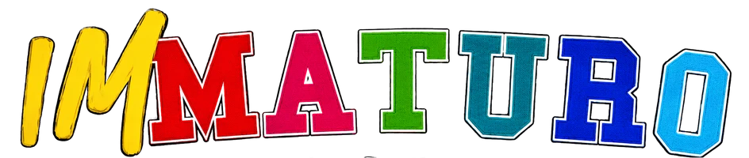

To The Moon — Lista 1
Liceo "Cristoforo Colombo" — Marigliano & San Vitaliano. Otto candidati, un solo obiettivo: portare la voce degli studenti più in alto che mai.
"Punta alla luna: mal che vada, avrai camminato tra le stelle."
Il programma elettorale
Dieci punti concreti, ciascuno seguito da chi se ne occuperà in prima persona.
01La nostra settimana dello studente
▾
Riproporremo la Settimana dello Studente a dicembre (8:00–12:00). Le prime 2 ore per ripasso e consolidamento, senza interrogazioni né verifiche; le ultime 2 ore per laboratori e attività gestite da noi studenti.
02Sportello d'ascolto digitale
▾
Un link anonimo, accessibile a studenti, professori e genitori, con un questionario in due fasi: alcune domande base per inquadrare la situazione, poi la scelta se si tratta solo di uno sfogo o se serve essere indirizzati verso il 1522 (numero nazionale anti-violenza e stalking) o verso una denuncia diretta ai Carabinieri.
03Valorizziamo la nostra arte
▾
Azzeriamo le distanze tra lo Scientifico di Marigliano e l'Artistico di San Vitaliano: progetti d'istituto condivisi per valorizzare l'arte, le opere e il talento della sede staccata.
04Immaturo
▾
Collaborazione con l'associazione culturale giovanile IMMATURO: ospiti a scuola (personaggi pubblici, influencer, politici, comici) e attività diverse dal solito, come interviste divertenti durante le assemblee, per vivere l'assemblea come qualcosa in più di una semplice mattinata fuori dalle lezioni.
05Distributore d'acqua
▾
Ci batteremo con fermezza per far installare distributori d'acqua (e snack) all'interno dell'istituto: un servizio essenziale per il benessere quotidiano di tutti.
06Ospite speciale
▾
Sulla scia dell'evento con Ntò (ex Co'Sang), lavoreremo per portare un grande ospite dal mondo della musica durante l'ultima assemblea d'istituto, per chiudere l'anno in grande.
07Progetto scuole unite
▾
Una rete di collaborazione con gli altri istituti di Marigliano e dintorni (Mario Rossi-Doria, Ferraris) e, grazie al nostro sponsor Holly4School, anche con le scuole di Nola, per organizzare iniziative, dibattiti ed eventi interscolastici condivisi.
08Eventi e tornei
▾
Non partiamo da zero: la festa "Back to School" ha già portato insieme circa 350 ragazzi tra Colombo e Rossi-Doria, e i tornei di Biennio e Triennio degli scorsi anni hanno avuto grande successo, coinvolgendo anche persone esterne alla scuola. Quest'anno vogliamo continuare con nuovi tornei, nuove serate e la tradizionale Partita del Cuore tra professori e alunni.
09Assemblea classi parallele
▾
Le assemblee d'istituto classiche, con troppi studenti in uno spazio enorme, rendevano difficile un vero dialogo. Per questo proporremo alla preside incontri in anfiteatro tra Rappresentanti d'Istituto e Rappresentanti di Classe, per classi parallele: uno spazio più piccolo dove gli studenti possano davvero relazionarsi con noi, esporre i problemi reali e cercare insieme una soluzione.
10Laboratori e seminari
▾
Collegato alla nostra Settimana dello Studente: oltre ai laboratori già attivi in questi anni (sportivo, fotografia, cineforum), ne aggiungeremo di nuovi — musicale, teatrale e altri proposti direttamente dagli studenti — con il supporto di tutor esterni o interni alla scuola, come professori specializzati in un determinato ambito.
I candidati della Lista 1
Otto studenti, un solo equipaggio pronto al lancio.
Antonio Vivolo
CapolistaVincenzo Piscopo
CapolistaRosa Romano
CandidataCarlo Esposito
CandidatoMagda Penna
CandidataFederica Cucca
CandidataSimone Signoriello
CandidatoAntonio Sena
CandidatoPunta alla luna: mal che vada, avrai camminato tra le stelle.
Resta in contatto
Seguici sui social.
Un grazie speciale al nostro sponsor Holly4School e alla nostra partner IMMATURO

